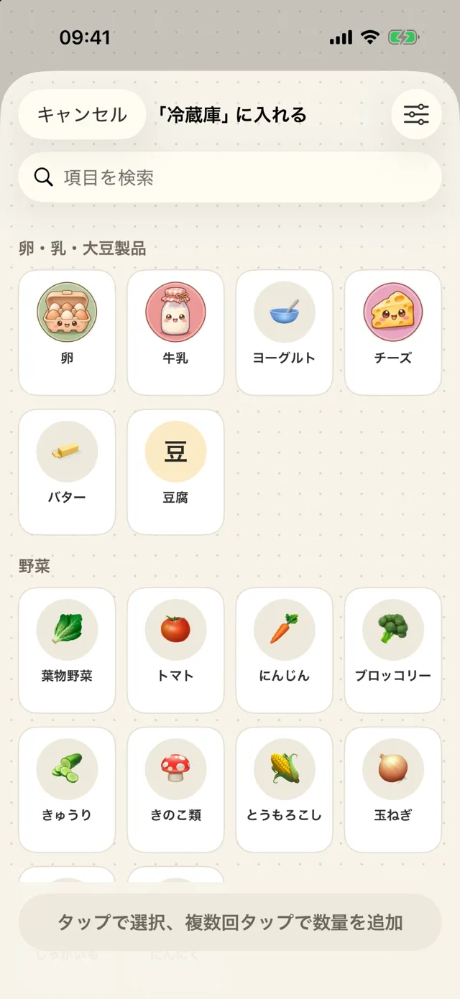
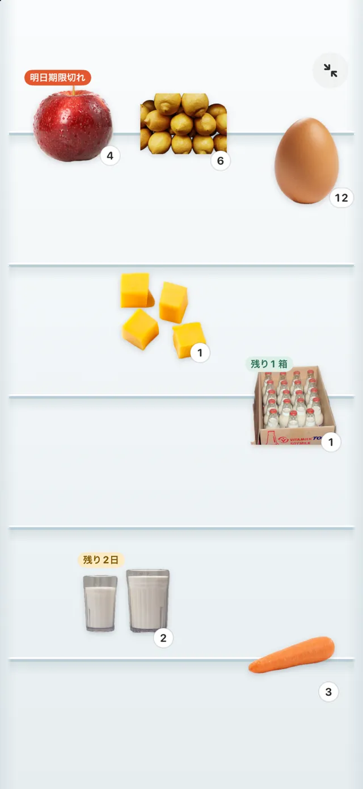
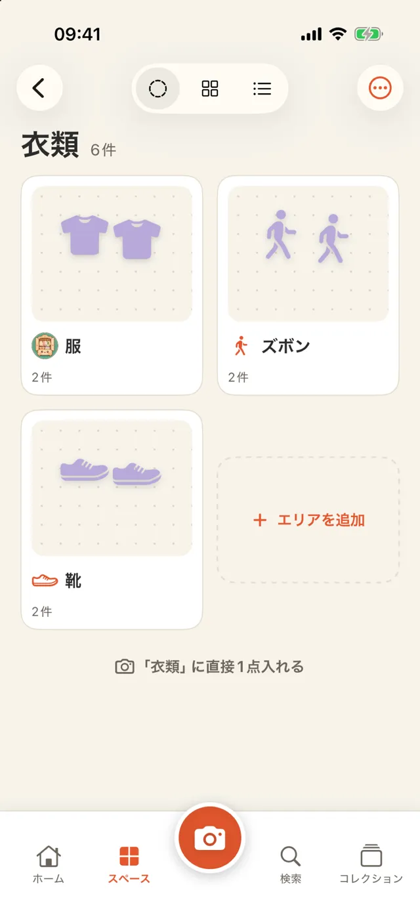
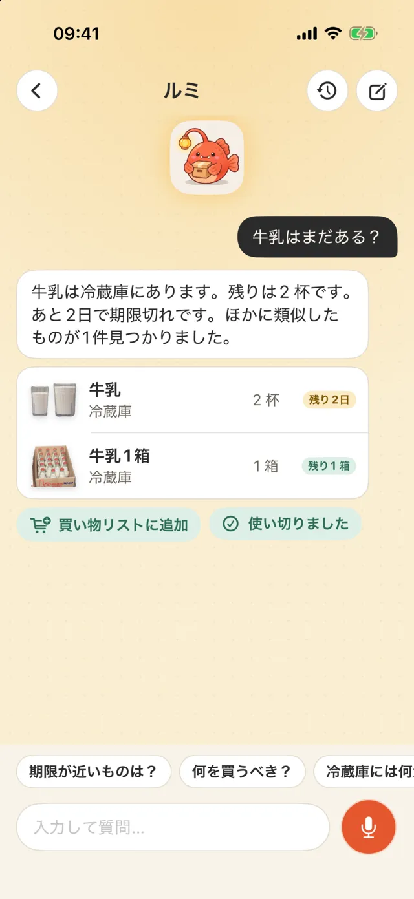

iPhoneで使う持ち物・思い出の記録アプリ
撮影して記録する
検索して見つける
冷蔵庫の牛乳、収納のペーパータオル、棚の本、旅行先で買ったカップ。写真を撮って、置き場所、残量、期限をiPhoneに記録できます。
App Storeでダウンロード- ✓ 無料でダウンロード、3か所まで無料
- ✓ アカウント不要
- ✓ データはiPhone内に保存

追加する
撮影して背景を切り抜く
ものにカメラを向けてシャッターを押すと、背景が自動で取り除かれます。同じカメラでバーコードも読み取れます。食品はOpen Food Facts、本はOpen Libraryで調べます。買い物の後は連続スキャンで、複数のものをまとめて登録できます。

よく使うリスト
写真を撮らずに、選んで登録
卵、牛乳、ティッシュなど、よく買うものは「よく使うリスト」からタップして追加できます。もう一度タップすると数が増え、期限は保存日数から自動で入ります。冷蔵庫、収納棚、薬箱、クローゼットにそれぞれのリストがあり、項目の追加や削除、自分で撮った写真への差し替えができます。

表示を切り替える
ディスプレイ・グリッド・リストで見る
ディスプレイ表示では、冷蔵庫の扉やドット紙、コルクボードの上に写真を配置し、移動やサイズ変更ができます。グリッドはものを探すとき、リストは在庫を確認するときに使えます。リストではボタンで数量を増減し、スワイプで使い切ったことを記録できます。
拡大表示
画面全体に、背景と写真だけ
ディスプレイがいっぱいになったら「伸ばす」で1ページ追加でき、下にスクロールして見られます。「拡大表示」ではタイトルやボタンが隠れ、画面全体がその置き場所になります。ドラッグやサイズ変更、写真をタップして内容を開く操作はそのまま使えます。

期限を記録する
パッケージの日付を読み取る
撮影すると、パッケージに印刷された期限を読み取ります。内容を確認してから保存してください。期限の何日前に通知するかは設定できます。

思い出を残す
ものにまつわる記録を書く
旅行先で買ったカップや友人からの贈り物に、写真、日付、場所、文章を追加できます。「京都 2024」のようなコレクションにまとめることもできます。「今日は何の日」には、過去の同じ日の記録がホーム画面に表示されます。

場所を作る
冷蔵庫や800収納を登録する
冷蔵庫、800収納（奥行き約80cmのウォークイン収納）、キャビネット、書棚、クローゼット、コレクション棚、薬箱、引っ越し用の箱から選べます。アイコンと名前を自分で決めることもできます。必要なら家や階ごとに場所をまとめられます。

階層を作る
場所の中に場所を入れる
「衣類」の中に「服」「ズボン」「靴」を作ると、外側のカードに中の場所が表示されます。移動するときはメニューの「中に移動…」を使うか、カードを長押しして別のカードにドラッグします。カテゴリにも「衣類 › ズボン」のような下位カテゴリがあり、保存時に自動で選ばれます。

ルミに聞く
見つからないものを質問する
ホーム画面でマスコットのルミに「パスポートはどこ」「牛乳は残っている？」と入力するか、長押しして話しかけます。置き場所、残量、期限を答えます。端末が対応していれば音声はiPhone上で認識されます。AIを使わなくても、名前、カテゴリ、場所の一致から探せます。

こんなときに使う
- 買い物の前に冷蔵庫の中身を確認する
- 期限が近いものから料理に使う
- 単3電池の置き場所を探す
- 本を誰に貸したか確認する
- 引っ越し用の箱ごとに中身を記録する
- 旅行の記念品を整理する
- 薬箱に期限切れのものがないか確認する
50秒の動画で見る
冷蔵庫の3つの表示方法、数量の変更、「衣類」の中の場所、思い出の記録、期限が近いものをルミに聞く方法を紹介します。
AIを設定する（任意）
AIを設定しなくてもアプリを使えます。利用する場合は次の2つの方法から選びます。AIをオンにすると、AIボタンを押したときに加えて、ホーム画面のひとことを作るために1日1回AIが呼び出されます。
Appleの内蔵機能
iPhone上のApple Intelligenceを使います。無料でオフラインで動作し、データはiPhoneの外に送られません。対応するiPhoneとiOS 26以降が必要です。
自分のAPIキー
Gemini、Claude、DeepSeekなどを利用できます。キーはこのiPhoneのキーチェーンにのみ保存されます。データは選んだサービスに直接送られ、当社を経由しません。
- 名前を付ける：写真に写ったものを認識し、カテゴリと単位を提案する
- この場所を確認する：冷蔵庫で先に食べるもの、収納で補充するもの、薬箱で期限が切れたものを確認する（医療上の助言はしません）
- 文章で探す：同義語を加えて検索する
- 思い出の文章を整える：入力した短い文章を、書かれていない事実を加えずに整える
バッジと共有用画像を見る
冷蔵庫で30日間、期限切れのものがなければ「冷蔵庫の番人」バッジを獲得できます。バッジ、ものにまつわる記録、年間の振り返りは画像として保存できます。場所と価格は初期設定では含まれません。

利用条件を確認する
| 対応端末 | iPhone（iOS 18以降） |
|---|---|
| 言語 | English、繁體中文、简体中文、日本語、한국어、ไทย |
| 価格 | 無料ダウンロード（バナー広告あり、場所は3か所まで、ルミとの会話は直近2件まで）。Proでは広告と両方の制限がなくなります。週額US$1、月額US$3、または買い切りUS$5 |
| アカウント | 不要 |
| データ | このiPhone内に保存。CSVで書き出し可能。削除したものは30日以内なら復元可能 |
| 通信 | バーコードの検索と、選択したAIサービスの利用時のみ |
制限を確認する
- iCloud同期と家族での共有には、まだ対応していません
- バーコードのデータベースにない商品は、自分で名前を付ける必要があります。次に同じバーコードを読み取ると、その名前が使われます
- 背景の切り抜き結果は写真によって異なります。失敗した場合は元の写真を使います